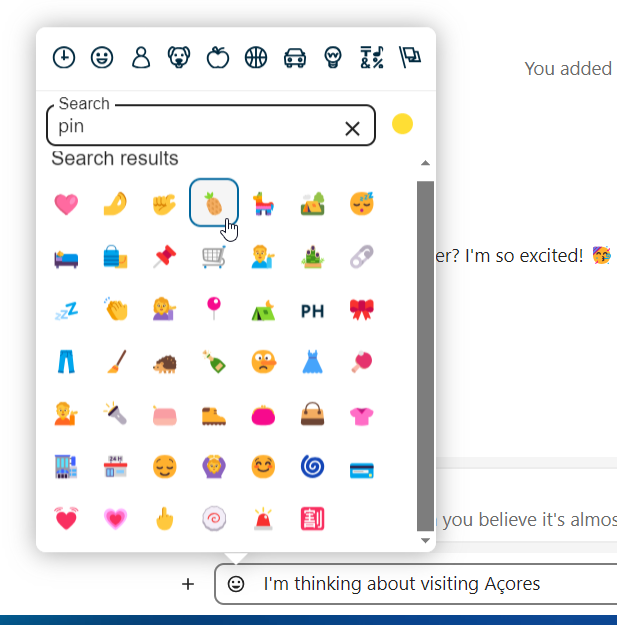
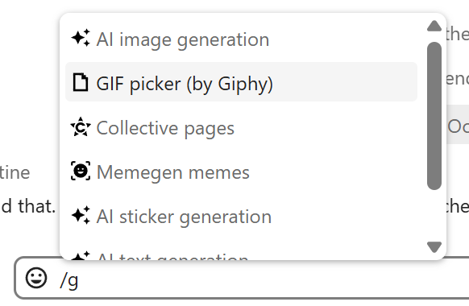
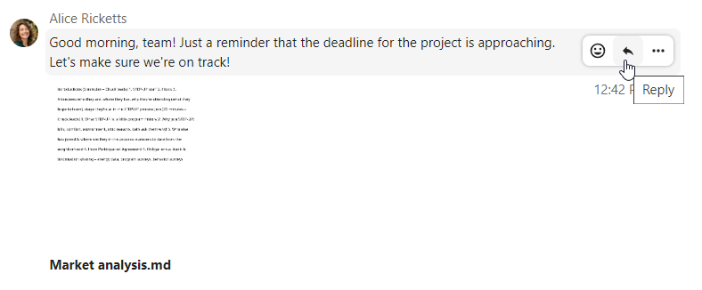
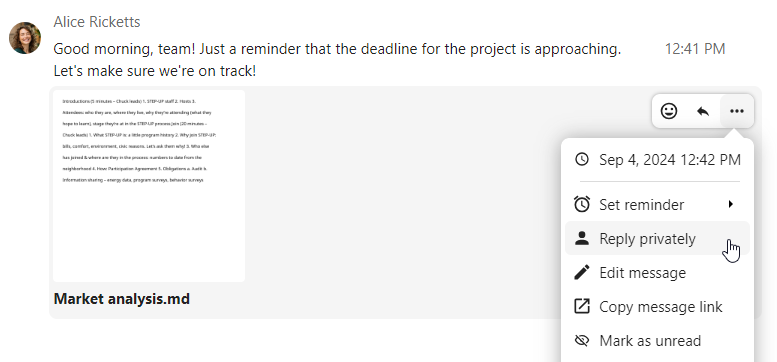
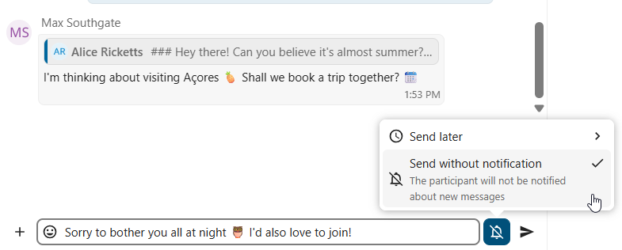
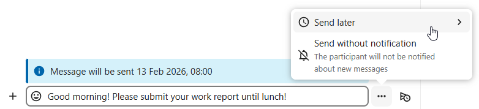
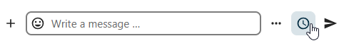
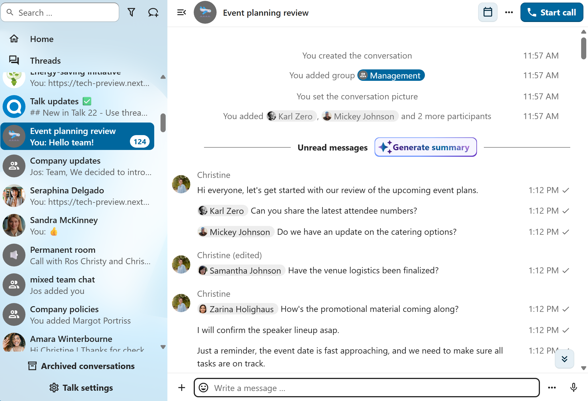
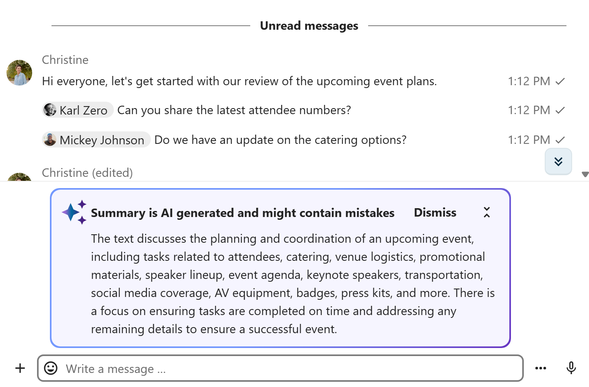

Trimiterea mesajelor
Folosirea Markdown
Îți poți îmbogăți mesajele cu sintaxa Markdown. Elemente acceptate:
Titluri și separatoare
# Heading 1
## Heading 2
### Heading 3
#### Heading 4
##### Heading 5
###### Heading 6
Heading
===
Normal text
***
Normal text
Formatare în text
**bold text** __bold text__
*italicized text* _italicized text_
`inline code` ``inline code``
```
.code-block {
display: pre;
}
```
Liste
1. Ordered list
2. Ordered list
* Unordered list
- Unordered list
+ Unordered list
Citate
> blockquote
second line of blockquote
Liste de sarcini
- [ ] task to be done
- [x] completed task
Tabele
Column A | Column B
-- | --
Data A | Data B
Inserarea emoji
Poți adăuga emoji cu selectorul din stânga câmpului de text.


Smart Picker
Smart Picker îți ușurează inserarea de linkuri, fișiere sau alt conținut în conversații. Alege tipul de conținut pe care vrei să-l inserezi (fișiere, conversații Talk, carduri Deck, GIF-uri etc.). Poți și tasta / în câmpul de mesaj pentru a deschide selectorul.


Mai multe aplicații de integrare pot extinde Smart Picker cu alte tipuri de conținut, precum issue-uri GitHub și GitLab, GIF-uri Giphy și altele. Întreabă-l pe administrator ce integrări sunt disponibile pe instanța ta.
Răspunsul la mesaje și altele
Poți răspunde la un mesaj cu săgeata care apare când ții cursorul deasupra lui.


Din meniul ... poți alege și să răspunzi în privat. Se va deschide o conversație unu la unu.


Tot de aici poți crea un link direct către mesaj sau îl poți marca drept necitit, ca să revii la el data viitoare când intri în chat. Dacă este un fișier, îl poți vedea în Fișiere.
Mesaje silențioase
Dacă nu vrei să deranjezi pe nimeni în miez de noapte, există un mod silențios pentru chat. Cât timp este activat, ceilalți participanți nu vor primi notificări pentru mesajele tale.


Programarea mesajelor
Dacă vrei să trimiți un mesaj nu acum, ci la o anumită oră, îl poți programa. Selectează data și ora dorite în acțiunile rapide de lângă câmpul de mesaj.


Toate mesajele programate le găsești dând clic pe pictograma ceas de lângă câmpul de mesaj. Acolo poți edita, reprograma sau șterge mesajele pregătite.


Rezumatul chatului
Când asistentul AI este activat, poate fi generat un rezumat al unei conversații cu peste 100 de mesaje necitite. Îl poți genera apăsând butonul afișat în chat deasupra primelor mesaje necitite.



